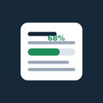
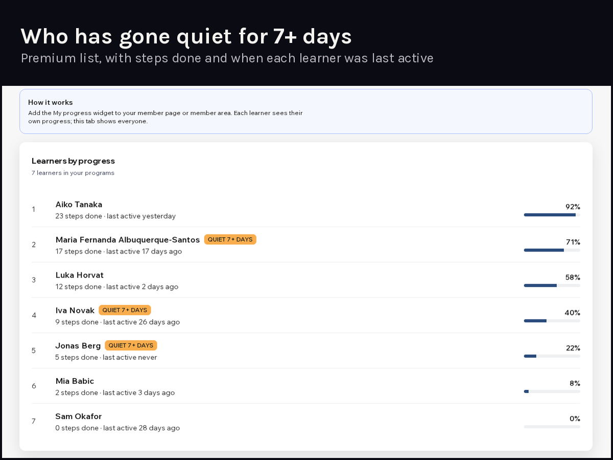

Learner Portal: Progress
See each learner's progress in every program
- Percent done for every online program
- Next step on each program card
- Quiet learners marked after 7 days
- Learners sorted by steps completed

What it does
Your learners open one page and see where they stand in every Online Program they joined: a progress bar, the steps they finished, and the next step waiting for them.
The widget reads the program data your site already keeps, so there is nothing to type in. Each card shows the program name, a percent bar, a line like 4 of 9 steps, and the next step with its button. A finished program reads Finished with the date. Before anyone logs in, the widget shows a friendly prompt to sign in, and in the editor it shows a sample so you can style it straight away.
The dashboard tab is for you. It lists every participant sorted by how much they finished, with their percent, the steps done and the date they last opened a step. Learners who have gone quiet for a week or more are marked, so you know who to nudge. One click takes you to the program.
The free plan gives you the progress widget with bars and next steps. Premium adds the quiet-learner list, certificate links on every finished program, and a leaderboard where a learner chooses to appear and is ranked by completed steps, first name and percent only. No trial: premium is 9 dollars a month or 90 a year.
Price
Free
- Progress widget on a member page
- Percent done for every program
- Next step under each program
Premium
$9/month, $90 billed yearly ($7.50/month)
- Quiet-learner list, 7+ days
- Certificate links per program
- Opt-in leaderboard by steps
- Priority support by email